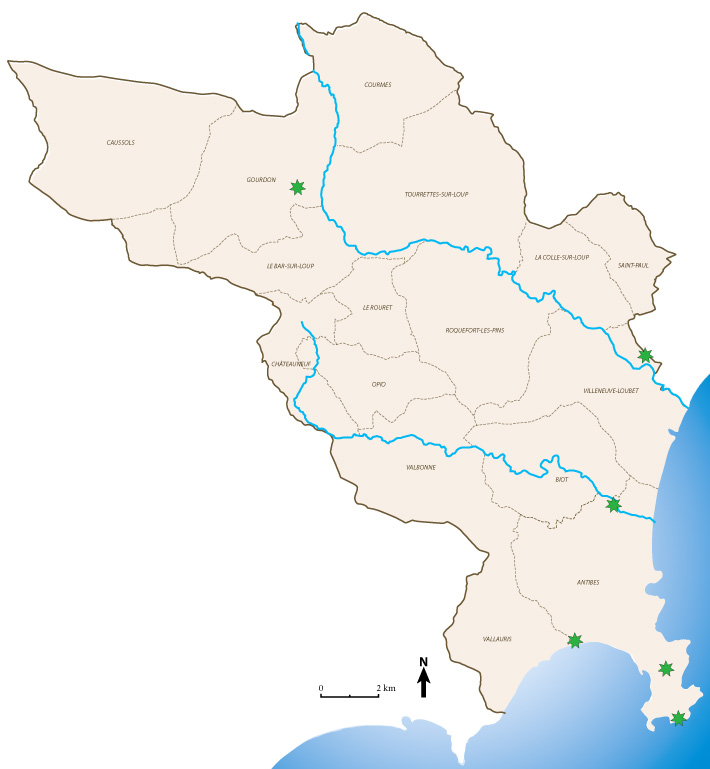

Le patrimoine contemporain - Les jardins remarquables
Le contraste des paysages, la douceur du climat, le développement des villégiatures de la Côte d’Azur ont fait des Alpes-Maritimes une terre d’élection de l’art des jardins. Qu’il s’agisse de jardins anonymes, de jardins marqués par la personnalité des botanistes, paysagistes, architectes qui les ont créés, qu’il s’agisse encore des jardins, parcs et sites intégrés dans le tissu urbain qui les a enserrés, cet ensemble remarquable légué par l’histoire lointaine ou récente donne au territoire des Alpes-Maritimes l’une des plus belles composantes de son identité.
Le phénomène s’explique sur le plan géographique par la succession rapide de paliers d’altitudes différentes où l’influence maritime se fait sentir jusqu’à l’étage subalpin. Sous l’aspect socio-historique, la fréquentation progressive de la Riviera par les hivernants dès la seconde moitié du XVIIIe siècle, puis l’arrivée du chemin de fer qui intensifia leurs déplacements, se conjugue avec un période d’importation massive en Europe de plantes du monde entier auxquelles convient le milieu bio géographique du littoral des Alpes-Maritimes. Les Anglais nous ont apporté l’exotisme avec le palmier et le mimosa a été introduit de Nouvelle-Zélande. Au cours du XIXe siècle, les municipalités des stations climatiques du département réalisèrent des parcs publics ; les établissements hôteliers entourés de jardins se multiplièrent tandis que l’acclimatation des végétaux exogènes, entreprise aussi bien par les botanistes et les jardiniers locaux que par les résidents de toute nationalité amateurs de plantes, développait dans des parcs et jardins l’aspect subtropical qui caractérise le littoral. Dans le prolongement de cette extraordinaire période de développement urbain, les œuvres de grands paysagistes appelés sur place avant et après guerre de 1914-1918 par les propriétaires de villégiatures pour y effectuer des compositions d’esprit nouveau, confirmèrent la vocation de la Côte d’Azur comme terre de jardins.
